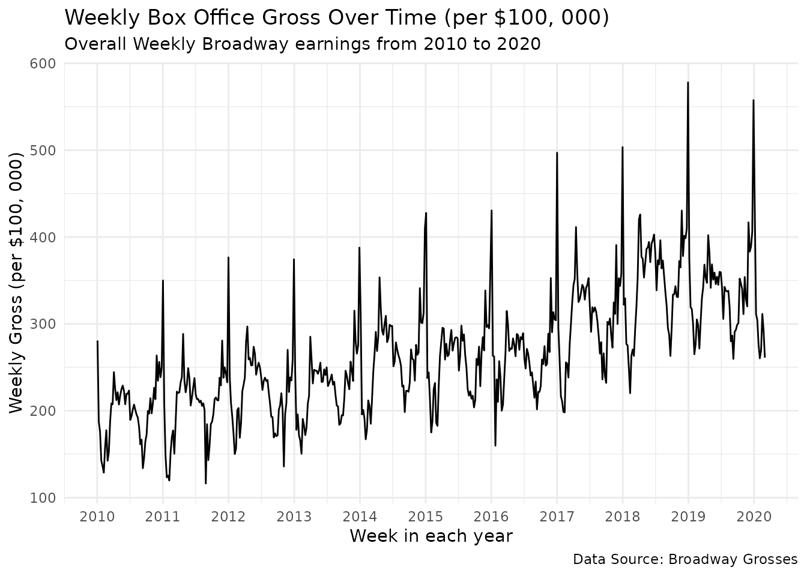

Demonstration
Jianing Yao
Demonstration.RmdThis vignette demonstrates the usage of MCMCpack on a
TidyTuesday dataset.
Data: The Broadway Weekly Grosses data can be obtained from TidyTuesday.
Question: This data contains information about weekly box office grosses, attendance, ticket prices of shows presented in Broadway theatres. What factors will impact weekly box office revenues, e.g., ticket price, attendance, time of the year?
Data dictionary: The data dictionary can be obtained here.
## create `data` directory if it doesn't exist
if (!dir.exists("../data")) {
dir.create("../data")
}
## download the TidyTuesday dataset only if it doesn't exist
if (!file.exists("../data/grosses.rda")) {
grosses <- readr::read_csv('https://raw.githubusercontent.com/rfordatascience/tidytuesday/master/data/2020/2020-04-28/grosses.csv', guess_max = 40000)
usethis::use_data(grosses)
}
if (!file.exists("../data/synopses.rda")) {
synopses <- readr::read_csv('https://raw.githubusercontent.com/rfordatascience/tidytuesday/master/data/2020/2020-04-28/synopses.csv')
usethis::use_data(synopses)
}
if (!file.exists("../data/cpi.rda")) {
cpi <- readr::read_csv('https://raw.githubusercontent.com/rfordatascience/tidytuesday/master/data/2020/2020-04-28/cpi.csv')
usethis::use_data(cpi)
}Data wrangling and visualization
First, I selected data after year 2010 and created a dummy variable to indicate whether the record is in holiday months (December or January).
library(dplyr)
#>
#> Attaching package: 'dplyr'
#> The following objects are masked from 'package:stats':
#>
#> filter, lag
#> The following objects are masked from 'package:base':
#>
#> intersect, setdiff, setequal, union
library(lubridate)
#>
#> Attaching package: 'lubridate'
#> The following objects are masked from 'package:base':
#>
#> date, intersect, setdiff, union
library(purrr)
library(ggplot2)
df <- grosses %>%
mutate(year = year(week_ending),
month = month(week_ending),
is_dec_or_jan = ifelse(month %in% c(12, 1), 1, 0)) %>%
select(-week_number, -performances, -previews, -seats_sold, -seats_in_theatre,
-potential_gross, -top_ticket_price, -show) %>%
filter(year >= 2010, complete.cases(.)) %>%
mutate(theatre = as.factor(theatre))The plot below shows the trend of weekly gross from 2010 to 2020.
ggplot(df, aes(x = week_ending, y = weekly_gross_overall/100000)) +
geom_line() +
labs(title = "Weekly Gross Over Time (per $100, 000)",
x = "Week Ending",
y = "Weekly Gross Overall (per $100, 000)",
caption = "Data Source: Broadway Grosses") +
scale_x_date(date_breaks = "1 year", date_labels = "%Y") +
theme_minimal()
The figure below shows the mean of weekly box office gross, average ticket price, and percent of theatre capacity for individual shows from 2010 to 2020.
library(tidyr)
df_theatre <- df %>%
select(theatre, weekly_gross, avg_ticket_price, pct_capacity) %>%
split(.$theatre)
means <- map_dfr(df_theatre, ~ colMeans(select(.x, -1), na.rm = TRUE), .id = "theatre") %>%
arrange(desc(weekly_gross))
means_long <- means %>%
pivot_longer(-theatre, names_to = "Metric", values_to = "value") %>%
mutate(Metric = recode(Metric,
weekly_gross = "Weekly Gross",
avg_ticket_price = "Average Ticket Price",
pct_capacity = "Percent Capacity"))
ggplot(means_long, aes(x = theatre, y = value, fill = Metric)) +
geom_bar(stat = "identity", position = position_dodge()) +
facet_wrap(~ Metric, scales = "free_y", nrow = 3) +
labs(title = "Mean Theatre Metrics", x = "Theatres", y = "Value") +
theme(
axis.text.x = element_blank(),
axis.ticks.x = element_blank(),
legend.position = "bottom"
) 
Try out MCMCpack
Next, I tried out Bayesian linear regression using Markov Chain Monte Carlo sampling algorithm with three predictors: average ticket price, percent of theatre capacity, and whether happens in holiday months. Weak priors are used for beta and sigma^2. Sub-models are also fitted and compared with the full model based on Bayes factor to select the best model.
library(MCMCpack)
#> Loading required package: coda
#> Loading required package: MASS
#>
#> Attaching package: 'MASS'
#> The following object is masked from 'package:dplyr':
#>
#> select
#> ##
#> ## Markov Chain Monte Carlo Package (MCMCpack)
#> ## Copyright (C) 2003-2023 Andrew D. Martin, Kevin M. Quinn, and Jong Hee Park
#> ##
#> ## Support provided by the U.S. National Science Foundation
#> ## (Grants SES-0350646 and SES-0350613)
#> ##
numeric_predictors <- c("avg_ticket_price", "pct_capacity")
df_bayes <- df %>%
modify_at(vars(one_of(numeric_predictors)), ~ as.vector(scale(.)))
#> Warning: Using `vars()` in .at was deprecated in purrr 1.0.0.
#> This warning is displayed once every 8 hours.
#> Call `lifecycle::last_lifecycle_warnings()` to see where this warning was
#> generated.
## MCMCpack
# Define predictor combinations
predictor_combinations <- list(
c("avg_ticket_price"),
c("pct_capacity"),
c("is_dec_or_jan"),
c("avg_ticket_price", "pct_capacity"),
c("avg_ticket_price", "is_dec_or_jan"),
c("pct_capacity", "is_dec_or_jan"),
c("avg_ticket_price", "pct_capacity", "is_dec_or_jan")
)
model_summaries <- list()
models <- list()
# Fit models and store summaries in the list
for (combo in predictor_combinations) {
formula <- as.formula(paste("weekly_gross ~", paste(combo, collapse = " + ")))
model <- MCMCregress(formula, data = df_bayes, B0 = 10e-8,
mcmc = 10000, marginal.likelihood="Chib95")
summary <- summary(model)
models[[paste(combo, collapse = "_")]] <- model
model_summaries[[paste(combo, collapse = "_")]] <- summary
}
sub1 <- models$avg_ticket_price
sub2 <- models$pct_capacity
sub3 <- models$is_dec_or_jan
sub4 <- models$avg_ticket_price_pct_capacity
sub5 <- models$avg_ticket_price_is_dec_or_jan
sub6 <- models$pct_capacity_is_dec_or_jan
full <- models$avg_ticket_price_pct_capacity_is_dec_or_jan
BF <- BayesFactor(sub1, sub2, sub3, sub4, sub5, sub6, full)
PostProbMod(BF)
#> sub1 sub2 sub3 sub4 sub5
#> 8.737520e-94 2.373981e-149 4.478599e-212 4.214932e-21 4.594342e-75
#> sub6 full
#> 2.793475e-131 1.000000e+00Not surprisingly, the best model is the full model that has the highest posterior probability of the model. All three predictors are significant based on posterior distributions.
full <- MCMCregress(weekly_gross ~ avg_ticket_price + pct_capacity + is_dec_or_jan, data = df_bayes)
summary(full)
#>
#> Iterations = 1001:11000
#> Thinning interval = 1
#> Number of chains = 1
#> Sample size per chain = 10000
#>
#> 1. Empirical mean and standard deviation for each variable,
#> plus standard error of the mean:
#>
#> Mean SD Naive SE Time-series SE
#> (Intercept) 8.696e+05 2.672e+03 2.672e+01 2.672e+01
#> avg_ticket_price 3.424e+05 2.904e+03 2.904e+01 2.904e+01
#> pct_capacity 1.462e+05 2.851e+03 2.851e+01 2.775e+01
#> is_dec_or_jan 1.896e+04 6.368e+03 6.368e+01 6.111e+01
#> sigma2 9.456e+10 1.053e+09 1.053e+07 1.071e+07
#>
#> 2. Quantiles for each variable:
#>
#> 2.5% 25% 50% 75% 97.5%
#> (Intercept) 8.644e+05 8.678e+05 8.696e+05 8.713e+05 8.749e+05
#> avg_ticket_price 3.367e+05 3.405e+05 3.424e+05 3.444e+05 3.481e+05
#> pct_capacity 1.405e+05 1.443e+05 1.462e+05 1.481e+05 1.518e+05
#> is_dec_or_jan 6.582e+03 1.466e+04 1.896e+04 2.326e+04 3.138e+04
#> sigma2 9.253e+10 9.384e+10 9.455e+10 9.527e+10 9.667e+10Finally, I plotted the fitted values using Bayesian estimated coefficients against the true values of weekly gross to evaluate performance.
estimates <- map(as.data.frame(full), mean)
df_bayes$fitted <- estimates$`(Intercept)` +
estimates$avg_ticket_price * df_bayes$avg_ticket_price +
estimates$pct_capacity * df_bayes$pct_capacity +
estimates$is_dec_or_jan * df_bayes$is_dec_or_jan
ggplot(data = df_bayes, aes(x = weekly_gross, y = fitted)) +
geom_point() +
geom_abline(slope = 1, intercept = 0, color = "blue", linetype = "dashed") +
labs(title = "True value of weekly gross against fitted using Bayesian estimated coefficients",
x = "True value",
y = "Fitted value") +
theme_minimal()
Summary
From this simple analysis, average ticket price, percentage of theatre capacity (i.e., attendence), and whether the shows are on during the holiday months can predict weekly box office gross of Broadway shows. The Bayesian approach provides another point of view to validate my assumption.
Functions:
- Data wrangling:
- purr:
map_dfr(),modify_at(),map() - Plot:
geom_line(),geom_bar(),geom_point(),geom_abline(),facet_wrap() - Package:
MCMCregress(),BayesFactor(),PostProbMod()